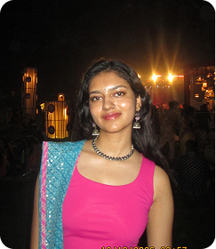
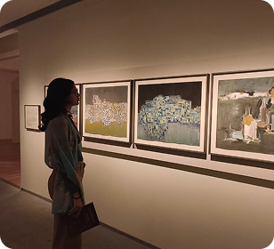
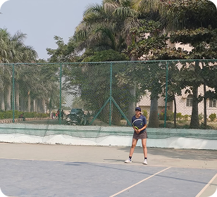
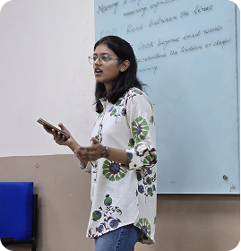
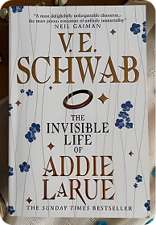

Grew up across different regions of India.
These experiences shaped my curiosity, adaptability, and amiability.

I love exploring, be it activities, food, cultures, art…
I’m always up for some experimentation.

Lawn Tennis, my trusted companion
College team Captain

I have a flair for public speaking
Secretary at my Toastmaster’s Club

Yoga, reading, and meditation are my resets.
They help me find stillness and keep me grounded.
